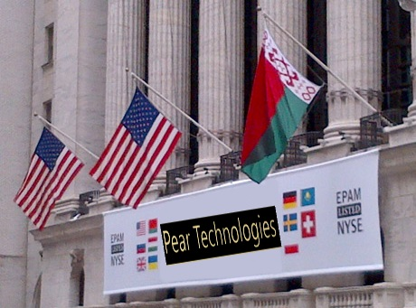
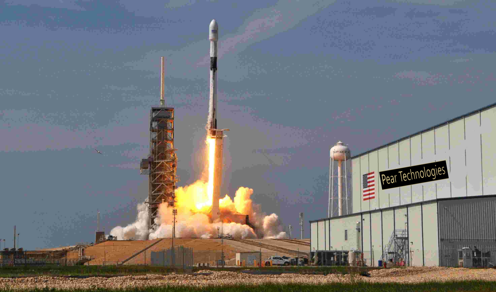

'Информация о:"Pear technologies"
 
Информационно-аграрно-технологическая компания "Pear Tecnologies" занимается распространением лучших видов фруктовых технологий.
Уже подписан контракт с National Aeronautics and Space Administration, сокр. NASA по доставке космических аппаратов на соседние планеты. 23 октября 2009
«Минский тракторный завод» представил трактор «Беларус-3023». Разработка была выполнена совместно с российским холдингом «Роскосмос». Трактор «Беларус-3023»
комплектуется монотопливным двигателем с электронной системой управления. Аппарат будет доставлен на Марс с помощью ракето-ускорителя Falcon heavy.
Миссией экспедиции является отбуксировка застрявшего марсохода Spirit и расширение арeала всех видов груш, а так же для обеспечения продовольственной недостаточности африканских стран.
*by artsemjandovski*